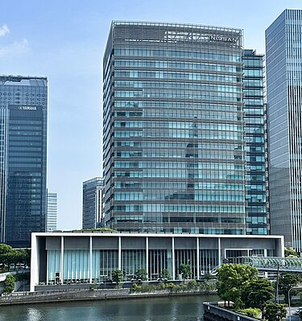
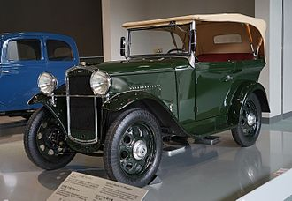
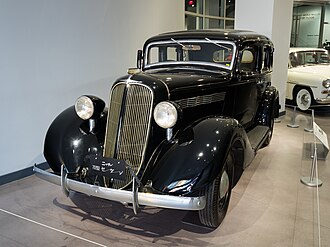
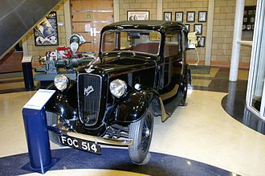

Nissan Motor Co. Ltd. is a Japanese multinational automobile manufacturer headquartered in Yokohama, Kanagawa, Japan. The company sells its vehicles under the Nissan and Infiniti brands, and formerly the Datsun brand, with in-house performance tuning products (including cars) under the Nismo and Autech brands. The company traces back to the beginnings of the 20th century, with the Nissan zaibatsu, now called Nissan Group.
Beginnings of Datsun brand name from 1914
Masujiro Hashimoto founded the Kwaishinsha (Kaishinsha) Motor Car Works. A Good Company Automobile Manufacturer) on 1 July 1911 in Azabu-Hiroo district of Tokyo. In 1914, the company produced its first car, called the DAT.
It was renamed to Kaishinsha Motorcar Co., Ltd. in 1918, and again to DAT Jidosha & Co., Ltd. (DAT Motorcar Co.) in 1925. DAT Motors built trucks in addition to the DAT and Datsun passenger cars. The vast majority of its output were trucks, due to an almost non-existent consumer market for passenger cars at the time, and disaster recovery efforts as a result of the 1923 Great Kantō earthquake. Beginning in 1918, the first DAT trucks were produced for the military market. At the same time, Jitsuyo Jidosha Co., Ltd. (jitsuyo means practical use or utility) produced small trucks using parts, and materials imported from the United States.
Nissan's early American connection
DAT had inherited Kubota's chief designer, American engineer William R. Gorham. This, along with Aikawa's 1908 visit to Detroit, was to greatly affect Nissan's future.[14][25] Although it had always been Aikawa's intention to use cutting-edge auto making technology from America, it was Gorham that carried out the plan. Most of the machinery and processes originally came from the United States. When Nissan started to assemble larger vehicles under the "Nissan" brand in 1937, much of the design plans and plant facilities were supplied by the Graham-Paige Company.[21] Nissan also had a Graham license under which passenger cars, buses, and trucks were made.
In his 1986 book The Reckoning, David Halberstam states "In terms of technology, Gorham was the founder of the Nissan Motor Company" and that "young Nissan engineers who had never met him spoke of him as a god and could describe in detail his years at the company and his many inventions.
Introducing four new energy vehicle concepts for the China market

Nissan sign
Nissan headquarters in Yokohama
Datsun Type11
The Graham-Paige based Nissan Model 70 sedan
Austin Seven Ruby